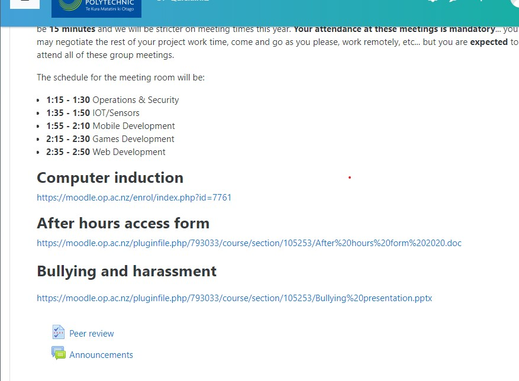
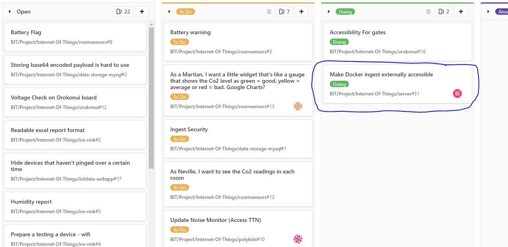

Today was day one of project. Adon gave a presentation about project, it was an introduction to the projects and lecturer. We firstly had to setup a computer and then all sat down. At this current stage all project students are still choosing their projects for the semester. I’m most likely going to be in Operations and Security again for my project 1. The only tasks we have been given were the following three shown:
Day two, thought I was going to be back in Ops & Sec but that is full so now I am part of IOT (as ops…I think).
We just had a meeting covering a basic introduction to the other members and learnt about what the Internet of Things is. Martin (our lecturer/supervisor) explained the basic theory and talked about current client projects such as Orokonui. Unfortunately, GitLab is down so we are limited to what we can do. So it was purely an observational session. [ask henry for photo of whiteboard]
GitLab is still not working we were able to view documentation, but not login.
Think I have a slight understanding toward what technical tasks need to be done. I will be looking at the containers for the servers, which is why I was looking at the documentation for Docker. I am slowly trying to understand what it is that I need to do but I’m still not fully sure. In my own time I need to learn Docker but also Django as I was advised to. [maybe screenshot of joshes documentation]
Day four, this is our first session with GitLab back and our first sprint too.
Today we started our first sprint and planned out what projects to do. After being assigned to a task I spent the rest of the class time trying to understand and as I call it “Unravelling my brain”. Although I don’t have a solid solution, I am sure I can easily find out so I am mostly confident.
I have been given some instructions on what it is I have to do. I created an ubuntu virtual machine and was given a good website known as tutorialpoint.com to learn docker from scratch. I had learnt Docker in the past but have forgot most of it unfortunately [show docker in vm]
I learnt the basics for docker up to the point of being able to make a web app. [find early docker screenshots] Bex (also in the IOT team) made me realise that I needed to use a server. So I am thinking about creating a server.
So today, I created another vm but using using Ubuntu Server instead of desktop. I realised the following day that i am still using a vm in the end of the day so its not actualy going to create a new server and will need to talk to the Operations and Security project group and ask them to create a server for me. Eventualy Martin told me we already have a server [screenshot with ip censored & show server]. He explained more the idea of Docker and helped me understand that there can be multiple Dockers within one server. [show my failed ubuntu server]
Henry (former IOT student) showed me a web app he had pulled down from someones github. He had given me instructions on how to install this and use it. Not realising at the time, I fully followed his instruction including instaling a type of docker [find the name]. I already had docker on my vm so it showed errors as it was trying to run two types of docker at once. I thought it would be a good idea to just delete docker and reinstall, doing this broke my ingest webapp. So I learnt the hard way to be more careful with what I deleted on the vm. I am going to start again in a fresh new server. [I should try finding old docker]
Due to the whole covid outbreak, we are now forced to comunicate online and have our classes/meetings online. This made it difficult for us to comunicate and get needed help. ....(come back to this)
It has been hard trying to get help while being stuck at home, I was asking Martin for help but also trying not to bombard him with questions as he is a busy man and I'm not the only one who needs his help. In our meeting today, Martin advised us to comunicate with each other (as in the team) more. Our teams chat is not as active as it should be. We all agreed with Martin and created a seperate IOT team group [screen shot of the chat]. Me and Bex decided to work together via discord video chat. One of us would screen share and the other would help. [get on call with bex and ask for screen shot] I have said that I would be scrum master for a few weeks now but did not know the role and the importance of the role. I knew I had to lead the meeting but did not know how and felt very uncomfortable. Martin told me to mkae sure I do some reasearch before I lead the next scrum.
In order to understand the role of scrum master, I went back and did some revision on Agile and scrums in general first. I then went on understand the roles in agile and what each role has to do. I continued to learnt about the dos and don'ts of a Scrum Master and watch examples of a Scrum Master in meetings. [show roles diagram (add: after seeing this diagram it clicked), what I read and videos I watched (maybe embedd the video)]. I aksed Bee (project lead) for some advice on leading, she gave me a lot of help especially about being a Scrum Master. [ask bee if ok to snip messages she sent] The time has come for our next meeting, I am super nervous. I had prepared notes about what to say and do. I kept it kept the meeting agile and focused on three things. 1. What did you do yesterday 2. What are you going to 3. Are there any obstacles and ask if they needed help, I would finish the scrum by passing the meeting on to Martin. [Maybe turn this into a list] This was actually harder than I thought and I actually missed one member of our IOT group, it is not easy for me to lead and take on others responsibilities. However, being a Scrum Master made me pay more attention for what my team members are working on.[take photo of my notes] My role as a Scrum Master was not limited to just the meetings, I knew that I needed to put the team before me so I messaged all of my team mates and asked them if everything is okay and how their project is going and offer help. [not sure if taking snip is ok here]
During our meeting Martin asked Kevin (part of IOT project) to create more tickets so pretty much just break down the tasks. Me and Bee offered to asist Kevin. We arranged a teams video call the very next day. Once we were all in a call, I offered to screen share and we looked at Kevin's ticket board. I decided to create a note pad where I wrote down notes and list all the tickets. Kevin was explaining the tasks and bee directed most of the tasks. I was mainly writing down what they were doing. As my notes were roughly done, Bee offered to modify them. We showed great signs of teamwork and we all equally contributed and it took us only about an hour to complete. [screenshots and snip of txt file ask bee for edited one]
Things to add:
{multiple: 1 on 1}
{multiple: our sprints}
[Ingest local (split this into parts or as one thing ask Martin)]
[Reverse-proxy * waiting for sub domain]
[Helping suresh with bex (split this into two parts or as one thing ask Martin)]
[Testing CO2 gauge documentation * current cal needs to finish for me to do the testing step]
[Documentations * Need to do badly!!!!!!!!!!]
[Deploy tasks]
[Volunteering: Audacious * current]
Note to self:
(What are the 4 debrief meetings is that 1 on 1?)
(make portfolio presentable)
("Remember you need to point out your contributions to the project. Focus on the important
things."-Martin.)
(Think about how i can impress him, don't give up.)
(Ask if portfolio structure is ok.)